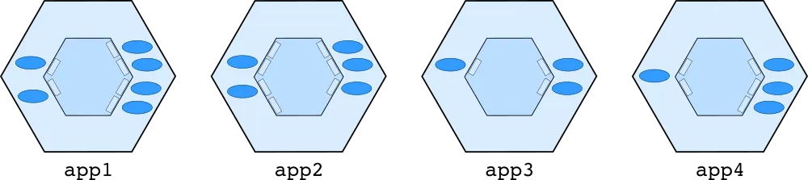
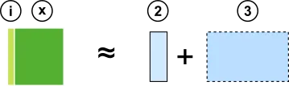
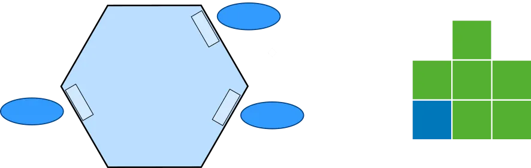
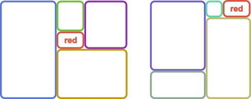

Tengstrand's Blog
The search for simpler code while having fun.
The search for simpler code while having fun.
In the Hexagonal architecture, we start with the application core, and let that grow over time. Polylith starts at another end, with the bricks, where each brick does one thing, and if we want to do one more thing, then we create another brick.

If you are a fan of the Hexagonal architecture, also known as Ports & Adapters, we think you’ll love the way Polylith turns your system into fine-grained Lego-like bricks!
The Hexagonal architecture was invented in 2005 by Alistair Cockburn. His article states that it “Allows an application to equally be driven by users, programs, automated test or batch scripts, and to be developed and tested in isolation from its eventual run-time devices and databases”.
The solution consists of three types of building blocks; ports, adapters, and the application core:

The picture shows a user that interacts with a user interface that talks to a Hexagonal backend application. There is also another system that interacts directly with the same application.
The main idea in the Hexagonal architecture is to isolate the core from the outside world:
Let's extract a slice, so we can more easily reason about these building blocks:

This shows how a user, via a user interface (UI), talks to a REST service that communicates with a database.

Here, a user uses a command line tool, which accesses a database and a file system from a shell.
The architecture leaves some flexibility when it comes to how the ports can be organized. Here we have switched the number of incoming and outgoing ports.
The Hexagonal architecture makes the application core depend less on its surroundings, which makes it easier to test and e.g. use an in-memory database when testing the app with a script.
Alistair Cockburn doesn’t talk much about how to handle larger systems in his article, but there is a “Distributed, Large-Team Development” section that mentions that a system can be split into several applications.
Wikipedia says that “According to some authors, the hexagonal architecture is at the origin of the microservices architecture”.
Here is how it may look like:
If too many charts make your eyes hurt, hold on, further down there will be references to code examples.
Now it’s high time to look at how the Polylith architecture works!
Polylith is a component based architecture that uses small LEGO®-like bricks that can be combined into various services and tools.
Working with a Polylith system is like having a Lego box with bricks:

In the Lego box we find two categories of bricks. The components in green, and the bases in blue. More on these categories later.
The bricks can be combined into any set of services and tools, called projects in Polylith:
We also have a special project called development which contains all bricks, and is used when working with the code:

All bricks and projects live together in a monorepo:

Here we illustrate how bricks are used across projects:

For example, the db component is used in both backend and email-lambda. This helps us remove code duplication and gives a tremendous level of reuse across the entire codebase.
The development project gives us a monolithic development experience so we can easily search, test, refactor, and debug the code, even across services.
You may wonder what a single development project has to do with an architecture. There are three main reasons:
Firstly, it guarantees that all bricks fit together, so that they can be combined in any way into projects, and then be built into artifacts. Bricks have access to all other component interfaces, which make them easy to create.
Secondly, how the code is executed in production is an implementation detail in Polylith. The philosophy is that we should be able to change how to run the code in production without affecting the development experience, and vice versa.
Thirdly, the single development experience is there to speed up the feedback loop and to make us more productive. Having all the code in one place gives us a simpler development setup compared to having several services running locally. It also improves the testing experience, including potential support for incremental testing.
A project is used to assemble a set of bricks into one place, so that we can build different kinds of artifacts from them, e.g. services and tools.
A command line tool can look something like this in Polylith:

We define a project in Polylith by listing the included bricks by name in a configuration file, similar to how libraries are handled but without giving a version.
This makes us stop thinking of code as layers or other shapes. Instead we can concentrate on one brick at a time, without caring about dependencies or how things are executed in production.
If we follow the call chain from the shell to the file system, it could look something like this:

The blue brick receives a call from the shell that delegates to a number of bricks, ending with the file brick that touches the file system.
To better understand the difference between Polylith and the Hexagonal architecture, let's compare the two:

Components in Polylith are our composable building blocks:

A component (c) has an interface (i) that delegates incoming calls to its implementation (x). We often skip showing the interface and instead illustrate the component as a green box (c).
The interface (i) sometimes has the same role as a primary port (2):
In that case, the component implementation (x) corresponds to a subset (3) of an application core (6).
The interface (i) can also have the role of outgoing port (4):

In that case, the implementation (x) corresponds to the secondary adapter (5).
Components only know about interfaces (i).
A base is a bridge between the outside world and the components it delegates to (via interfaces):
A base (b) has a public API (a) that receives incoming calls from the outside world (w), and delegates (d) them to interfaces (i) and in rare cases other bases (b). We often skip showing the different parts of the base (a + d) and instead illustrate it as a blue box (b):

A base (b) has the same role as the primary adapter (1) which is to expose a public API.
Bases only know about other bases and interfaces (i).
Brick is the common name for a component or base:
The name comes from the fact that they are small and composable, like LEGO® bricks.
A way of thinking about bricks is that they are Hexagon application cores in miniature:

This component accesses three different interfaces. The component doesn’t know how the interfaces are implemented, in the same way an application core doesn’t know which secondary adapters are behind the outgoing ports.
One difference is that behind the interfaces to the right, there can be both “secondary adapters” and pure domain logic.
To better understand the differences, you can see a Polylith project as made up by many "mini application cores", which could look something like this:

The "mini core" to the left is represented by a base in Polylith. The five domain “mini cores” in the middle will be components, and then we have two more “mini cores” to the right that encapsulate different IO-operations, which also will turn into components.
The eight "mini cores" are assembled into an application in Polylith:

Applications are called projects in Polylith, and are illustrated like this:

Polylith doesn't force you to organize your bricks in a certain way, but because it’s so easy to create small, cohesive components, a Polylith system tends to end up with many components, each of which does one thing.
That can be a subdomain, an interface to a database, or a third-party API.
Let's see what an application core could look like in Polylith:

Here is an example of how a primary adapter (1) delegates to an incoming port (2) that delegates to a subdomain (3) that calls three other parts of the application domain (6) and two outgoing ports (4).
In Polylith, the base (1) does the same job as the primary adapter. The four subdomains and the two secondary ports with associated secondary adapters, are replaced by six components in this example.
If we strip away the calls, the two applications can be illustrated like this:
In the Hexagonal architecture, we start with the application core, and let that grow over time, and maybe split it up into smaller pieces when it gets too big. Alistair’s article has examples on how to isolate the application core, but leaves no guidance on how to structure the code inside the core.
Polylith starts at another end, with the bricks. A brick does one thing, and if we want to do one more thing, then we create another brick. We don’t have one or more “application bricks” that we continuously add code to. Instead we end up with a set of bricks that can be put together into various projects.
Exactly how the code should be executed in production can be postponed to later, and also be easily changed when needed, by regrouping the bricks.
In object oriented languages, functionality is oriented around objects, but often with one exception: arithmetic operations.
Back in time when most object oriented languages didn't have good support for functional style programming, you could still use arithmetic expressions like 1 + 2 * 3:

Compare this with an all-in object oriented approach. Note that this is just an example to illustrate the differences, not the optimal way of solving the problem:
Number one = new Number(1);
Number two = new Number(2);
Number three = new Number(3);
Number result = one.plus(two.times(three));
As you can see, this requires more code and doesn't read as well.
Let’s list the different ways an object A can gain access to an objects B:
Any of these variants will give A access to B:

These kinds of operations can sometimes be performed by a dependency injection framework, but under the hood, some of the operations above will be used.
The Hexagonal architecture originates from the object oriented world, and the code examples in Alistair’s article uses dependency injection.
In the 1 + 2 * 3 example, we didn’t have to specify the relationships between the operators and the operands, which made the functional solution simpler and more readable.
Polylith originates from the functional world and takes this approach to software design. Bricks are composable, the same way 1 + 2 * 3 is, and we don’t need to specify how each brick depends on other bricks when we assemble them into projects at build time. It’s enough to specify which bricks to include:
Almost too simple!
In Polylith we don’t configure how the bricks depend on each other. As long as they compile in the development project, we are fine. All bricks have access to all components, or to be precise, all interfaces, and they are connected by using direct function calls.
So when a brick needs some functionality that is exposed in any of the interfaces, we don’t have to add an annotation, edit a configuration file or add a member to a class to gain access. All we have to do is to import the brick’s interface namespace in the code that needs it, in the exact same way we do with libraries. It doesn’t need to be more complicated than that!
Note that in some situations we need polymorphism at runtime, and when that happens, we need to solve that in a traditional way.
It would be possible to implement a variant of Polylith using dependency injection, but it would also be more complex and more like the object oriented example, and less like 1 + 2 * 3:

The bottom line is that putting things side by side is more composable and less complex than putting things inside each other.
As you have probably already figured out, Polylith is very much a tool to fight complexity.

I explain how composability, size, and other things affect complexity here.
If you want to compare different backend systems, there is a cool project called RealWorld where different languages implement the same backend API spec.

There is an implementation using the Hexagonal architecture in Go here, and a Polylith example in Clojure here.
You can explore the Polylith example without installing anything.

There are instructions here for getting a full development environment to a live Polylith Real World example running in your browser, with only a few clicks. It guides you in how to use Clojure so that you can experiment with Polylith!
The main goals of Polylith are to decrease complexity and make coding a more joyful experience. Code duplication is generally considered undesirable, which is also why code sharing is built-in to Polylith.
We could create libraries as a way of sharing code within our system and across services. But that would also increase the complexity and harm the development experience, which we want to avoid.
Polylith solves the sharing problem at build time. These are the prerequisites for it to work:
Let’s go through them.
In Polylith, we don't use libraries to share code between services and tools, because of the problems that come with it:
Once we abandon this idea, we need to use a monorepo.
You can think of Polylith bricks as blocks of code that can be shared across the entire system at build time and are connected with direct function calls in the same way we use libraries.
Once the bricks are represented as plain source code, the next step is to be able to assemble subsets of them into projects and build artifacts from them.
This can be implemented in different ways, depending on which language and tools you use. The best way we have found is to let the code structure mirror the architecture’s building blocks (bricks and projects) and use IDEs and build tools that have support for multiple source directories.
Other variants include the use of symbolic links or a single development project with just one source directory. None of these give the same level of decoupling and composability, so we stick with the multiple source directories variant here.
Clojure, together with tools.deps, has built-in support for multiple source directories.
Here is an example taken from the clojure-polylith-realworld-example-app project, which lists the bricks in a deps.edn config file:

In Python we have Python tools for the Polylith Architecture which uses Poetry together with the Multiproject plugin.
Here is an example that is taken from its documentation:

Another example is Java together with Maven. Java doesn’t support the use of multiple source directories out of the box, but it can be achieved with the build-helper-maven-plugin. Most Java IDEs support Maven based projects, which means we get the IDE integration for free.
As we mentioned earlier in the previous section, it would be possible to use dependency injection together with a monorepo to share code across applications, but that would also add more complexity and be less composable, which is why we avoid it.
The standardized code structure in Polylith helps us reason about the code, but it’s also part of the solution to the code sharing puzzle and how to support polymorphism at build time.
A Polylith codebase lives in a monorepo and is divided into one or more workspaces. A workspace mirrors the core concepts of the Polylith architecture, like bases, components, and projects.
In this example, the workspace directory is also the root of the repository. It can have any name, but here we stick with workspace:
▾ workspace
▸ bases
▸ components
▸ development
▸ projects
Each brick and project lives in its own directory, e.g.:
▾ workspace
▾ bases
▸ email-lambda
▸ reporting-rest-api
▾ components
▸ authentication
▸ aws-lambda
▸ database
▸ logger
▸ payment
▸ signer
▸ development
▾ projects
▸ email
▸ report-generator
Each brick stores its own source directories, and each project lists the included bricks in a config file:
▾ workspace
▾ bases
▾ email-lambda
▸ src
▸ test
▾ components
▸ authentication
▸ src
▸ test
▸ development
▾ projects
▾ email
▸ config.txt
The namespaces for a base follow this structure:
top-namespace.base-name.namespaces
First we have the top namespace, which could be any valid namespace, e.g. my.company. Next we have the name of the base, e.g. email-lambda, followed by one or several namespaces which implement the public API and delegate to component interfaces.
A component is structured in a similar way, but has the interface name directly after the top namespace:
top-namespace.interface-name.mespaces
A component also has an interface namespace, that delegates incoming calls to implementing namespaces, e.g.:
com.mycompany.authentication.interface
com.mycompany.authentication.core
com.mycompany.authentication.morestuff
An option is to split the interface to sub namespaces, e.g.:
com.mycompany.authentication.interface
com.mycompany.authentication.sub-ifc
Think of an interface in Polylith as a set of functions (and maybe constants and macros) that exposes a component’s functionality.
If more than one component implements the authentication interface, they will live in separate directories under components but use the same com.mycompany.authentication namespace.
All bricks use the same top namespace, or com.mycompany as in this example.
Each project includes a configuration file that specifies the bricks to include in the project. This is often a single base and a set of components. How this looks depends on which library or build tool you use for your language of choice.
We can take the previously mentioned realworld-backend service as example:
The tooling gathers all the brick namespaces into one single “monolith”:
clojure.realworld.article.interface
clojure.realworld.article.interface.spec
clojure.realworld.article.core
clojure.realworld.article.spec
clojure.realworld.article.store
clojure.realworld.comment.interface
clojure.realworld.comment.interface.spec
clojure.realworld.comment.core
clojure.realworld.comment.spec
clojure.realworld.comment.store
clojure.realworld.database.interface
clojure.realworld.database.score
clojure.realworld.database.schema
clojure.realworld.env.interface
clojure.realworld.env.core
clojure.realworld.log.interface
clojure.realworld.log.core
clojure.realworld.log.config
clojure.realworld.profile.interface
clojure.realworld.profile.interface.spec
clojure.realworld.profile.core
clojure.realworld.profile.spec
clojure.realworld.profile.store
clojure.realworld.spec.interface
clojure.realworld.spec.core
clojure.realworld.tag.interface
clojure.realworld.tag.core
clojure.realworld.user.interface
clojure.realworld.user.interface.spec
clojure.realworld.user.core
clojure.realworld.user.spec
clojure.realworld.user.store
From here we can run tests and build and deploy an artifact, e.g. a service.
As you already know, the development project is used to give us a monolithic user experience.
However, an important difference from other projects is that you never build and deploy the development project.
It’s also a place where you put code that is only used during development, for example code that fixes problems in the production database.
We can even let each developer have their own namespace, e.g. dev.alanturing or dev.adalovelace, where they can put code that they find useful during development.
A Polylith tool can give us additional value, for example help us enforce various constraints, like that bricks only access interfaces, or that all components fulfill the interface contracts. A tool can also help us run tests incrementally, or visualize different aspects of the architecture.
The poly tool, written for Clojure and tools.deps is a good example. This is what the output of the info command looks like for the clojure-polylith-realworld-example-app example app:

By looking at the names and the colors, we can see that this system has a realworld-backend REST service, exposed by the rest-api base, containing nine components with different responsibilities. This gives us a pretty good idea of what problems this system solves and how it's executed in production.
It also shows additional information, like the e6f7f20 commit hash number and the stable-master git tag, which was created when all tests passed in the continuous integration pipeline. This is a marker for the latest stable point in time, which is used by the tool to run tests incrementally.
The s and t flags tell us whether the src and/or test directories for a brick are included in a project.
Another example is the deps command:

It shows which interfaces (in yellow) each brick depends on. For example, the rest-api base depends on all interfaces, while the tag component only depends on the database interface.
Finally, here is the output from the libs command:

This shows which libraries that are in use, which bricks are using them, and which projects they will be included in.
The tool also supports incremental testing, which I try to describe here. Having tooling support like this gives the productivity an extra boost by speeding up the feedback loop.
At the time of writing, there is only tooling support for Clojure/tools.deps and Python, but we hope more languages will be added in the future. In the meantime, don’t be afraid of using Polylith, even if your language lacks tooling support, you will still get most of the benefits!
If you are curious about how real production systems could look, please visit the production systems page of the poly tool documentation.
A good thing with the Hexagonal architecture is that it separates concerns. However, Polylith takes separation of concerns to the next level.
Polylith is the first component-based architecture with truly small composable bricks that can be shared across the entire system.
The bricks help you focus on code quality, changeability, observability, testability, and efficiency, both when developing the code and when deciding on how to run the code in production.
If you haven’t tried Polylith yet, please do, because it’s a real joy to work with!
Happy coding!
Published: 2023-11-01
Tagged: architecture polylith